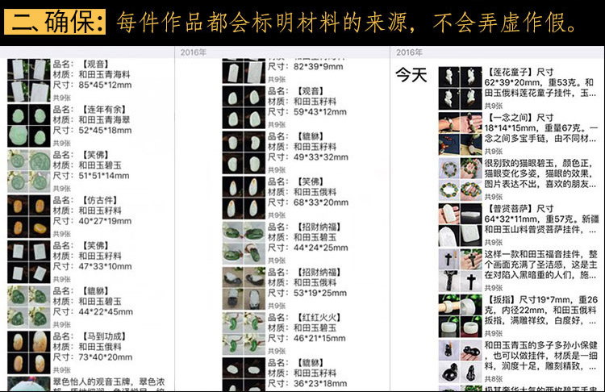

提到和田玉的选购，大家普遍认为就2个字“水深”
大家在日常生活中，对和田玉或多或少都会有接触和了解，市场上和田玉价格高低不一，有的低到几百元，有的高到上万元，但是商家都说是和田玉，到底哪些才是真正的和田玉呢？哪些才是和田玉的上品呢？我们怎样才能以合理的价格买到自己喜欢的和田玉呢？ 当你能看到这篇文字，我们算是有点缘分，也说明你是一位喜欢和田玉的朋友，朋友莫急，请耐心看完以下内容！（当然，如果您嫌看文章太麻烦，您可以先添加我的微信：(←轻点微信号即可复制) 如果您是爱玉之人，以后总有用得到我的地方！）
和田玉的价格之高，除了本身价值连城，稀缺升值以外，还有一部分原因，是因为二道贩子和不良商家，从而让很多喜欢和田玉的朋友们，望而却步！市场乱象丛生，看到好多玉友上当受骗，我悲伤不已，因此我要站出来！
我是恒得利鉴赏师，一个热衷和田玉十多的行业从业者和爱好者。
【恒得利】至今累计服务和田玉爱好者30万余人，并每天保持稳定上新30余件。做和田玉已经10多年了，给全国100多家商家供货，与多位和田玉雕琢大师感情颇深!
和田玉是一种难得的宝贝，我们鉴赏师经常被称之为行家，并不是我有多大本事，能站出来谈玉，是因为和田玉成就了我的事业，更是让我一辈子奋斗的人生意义所在。我只是希望，能凭借自己的微薄之力，让越来越多的人懂得辨玉与爱玉。
不知从何时开始，我对和田玉行业愈发的焦虑与恐慌，并不是好料子的稀缺，而是我们的社会充实着太多的谎言和欺骗。
可能，市场上80%的和田玉爱好者都和我一样，有着同样的感触：我明明买的是新疆籽料，为什么行家看后，都说是俄仿籽、烧皮子...
不止如此...
有些商家拿青海料、俄料冒充新疆料卖，俄仿籽的当和田籽料卖，更可恨的甚至用玻璃、卡瓦石、石英石、水石、金丝玉、阿富汗玉等等来充当和田玉欺诈老百姓的...
这也是【恒得利】至今，最常听到遇到的事情，也是我所服务过的万余名爱好者之中，所接受到的最真实的鉴定和反馈，也是千真万确的事实。
“玉有价，诚信无价”要捍卫客户最基本的知情权！于是【恒得利】从开店到现在，坚持产地承诺，如实描述。不欺瞒更不能作假；假一砸店这是我们品牌的态度。
选择和田玉有五大要素
第一：油润度
行内有句话叫：翡翠看种，和田玉挑润。这里所谓的润，说的就是和田玉的油糯性。所谓的油糯性，表现出来的，其实就是和田玉质地的细腻与滋润。
第二：密度
这点很难掌握，也很难用文字描述。我一般用侧弱光看结构，说不见结构是夸张了，只有假料不见结构。室外自然光下看不到内部的结构，我觉得可以了。当然，是越细腻越好。
第三：色泽
颜色尽量要正，白的最好能不发闷，假如还能不闪青就完美了。把玉放在洁白的纸上，我觉得是看白玉很有效的方式。我们不是一定要跟白纸去比，至少感觉到它真实的颜色了。碧的青的最好让人感觉鲜艳。我们的文化传承中，玉总是跟白联系在一起。同等情况下，白玉的确比较畅销。玩皮色的，尽量选巧色，白玉上面带巧色就更好了。
第四：纯度
干净是选择产品的第二因素，尽量不要有杂质，棉，侵染，石性（巧雕除外）。这个相对容易辨别，争取室外肉眼难以发现。实在没法避免的，力争正面或者要部位没有受到影响
第五：型（雕工）
包含外观，工艺，大小。外观，我们联想一下生活中各种美的器物形状，引申到玉器也是一样。比例得当的玉器，会给人一种美的享受；相反歪瓜裂枣的外形总是禁不起时间的考验。
和田玉的选购主要从这5个要素考量，还有很多其它因素，大家可以加我微信号: (←轻点微信号即可复制)
给大家欣赏下我们店的几款玉件
这是店里经验丰富的苏工师傅出品的
雕工精湛的玉器挂件
这款巧雕的工艺是我们店师傅作品
从朋友圈挑出的几款作品，每天都在更新

挂件、手镯、项链、摆件...应有尽有
一手和田玉在新疆，因为地理位置太远，所以外地很多玉友都会在网上来购买。在网上结缘玉件时一定要多问多了解，千万不要因为价格便宜而买到假玉或残次品。
往往贪图便宜，就会不小心买到假玉，我还是给大家提个醒，确定以下几点，会少几次心痛:
1、是否可以视频看下物件
2、是否可以提供权威的鉴定证书
2、是否可以提供权威的鉴定证书
加我微信：
一个热衷和田玉十多年的行业从业者
为广州、西安、新疆多家实体店一手货源直供
如果你想交流鉴定、查看新货、了解更多玉知识
加我微信：(←轻点微信号即可复制)
朋友圈时时上新，不定期举办特价和拍卖等捡漏活动。
给新玩家看看冒充和田玉的那些石头
黑色卡瓦石，通常用来冒充墨玉，低仿，连光都不透，就是石头嘛
卡瓦石雕件（冒充白玉）
卡瓦石籽，冒充籽料，杀伤力在于是真籽，有毛孔，有的甚至也带真皮色，区别在于不是玉“籽”，是石“籽”。
漂亮、油性好吧，像年糕吧，其实是叶蜡石。
这个是石英，和玉没有关系。这样的东西即使黑白分明，盘在手上也一点感觉都没有
岫玉，特点是水头超大
玻璃的，大家注意观察凹槽里面的状态与玉石的差异，仔细看还是比较明显的。玉石雕刻的凹槽里面感觉比较流畅，而玻璃制品的凹槽里面感觉比较脆。
十多年的行业经验，我总结：当您看上了一块“白菜价”的和田玉时，先抑制一下捡漏的喜悦心情，睁大眼睛仔细观察，同时斟酌一下，是不是“漏”在捡您。
负责任的告诉大家，我们经营了十几年的和田玉店，现也给当地几家实体店供货。做玉不敢说自己是最大的货源商，矿上出的料子，我们是第一时间得到。最起码我们也敢说自己是一手货源了。
工人休息时间，我们也去看看今天的收获。一天十几个挖机，碰不到大料子就是赔钱。资源稀缺了，这也是和田籽料涨价，和田玉收藏价值越来越高的原因之一
在矿上第三天出了个好料子，加上之前积累的料子，我们都需要带回乌市，有的需要去切去雕，有的直接卖掉。
现在我们除了原石籽料、雕刻的成品，也接受客户的订制，很多老板都想有块传家玉，加我微信详聊哦！
加我微信：
朋友圈每天时时上新，总有一款与您有缘。
鉴定、品玉、交友，不定期线下活动。
结缘原石籽料、订制传家玉、拍卖捡漏
名额有限，加我微信：(←轻点微信号即可复制)
除了在当地，我们也全年给洛阳、苏州的玉商铺货。十多年的时间，能把这个事业做好做大，不是我们有多大的能力，而是我们懂得玉商最大的“套路”就是真诚，恰好这是很多玉商尚未达到的！
现在物流、网络信息发达了，我们也赶上了网络这趟末班车，每天都有全国很多玉友，通过网络在我们这里结缘属于他们的一块玉。现在朋友又介绍朋友，来咨询的人越来越多，有时的确也忙不过来了！
从我们店里结缘的每一个物件，我都会严格把控，容不得一点疏忽，我宁肯一个顾客来买10次，也不愿十个顾客只做一锤子买卖！
捍卫客户最基本的知情权！坚持真实承诺，如实描述。不欺瞒更不能作假；假一砸店这是我对自己和店员的态度。
三、价格便宜
工作室从买料加工生产抛光一体，可批发可零售，一手货源，保证材料、工艺的前提下大大压低成本，我们本着自己赚个加工费就可以的原则，让客户买到价格实在的和田玉。
四、免费顾问：免费鉴别和田玉。
加【恒得利】微信： (←轻点微信号即可复制)
五、分享和田玉知识干货
朋友圈会发一些文玩鉴别知识、设计图、加工图、私人订制的成功案例等等，而且有些话并不能在这里公开说，我只会在微信里说明甚至揭穿。
六、免费鉴定：
加好友之后对和田玉有什么疑问或者困惑，请直接给我留言图片和问题，有空的时候就可以直接帮你解答。注意以下几个步骤：
1.发送产品图片（最好在自然光下多角度图片，识别度高），因为微信上鉴定只能靠图片去分辨，图片昏暗，不清晰，图片太少都会让我没办法去鉴别。毕竟没有实物上手仅凭几张模糊的图片我也不能妄下结论！
2.发送鉴定类别（真假，产地，成色等等），不要发语音，文字能让我直接看的一目了然！
3.不估价（估价这个我是一直拒绝的，因为和田玉从原料，做工，抛光，销售没有统一的价格标准。我也是商家，别人也是商家，大家都需要利润来生存，我不能拿自己的标准来断别人的财路，这不厚道。玉器类的自己喜欢，价格自己又能接受就好，价位是否合理可以货比三家，可以多多打听）